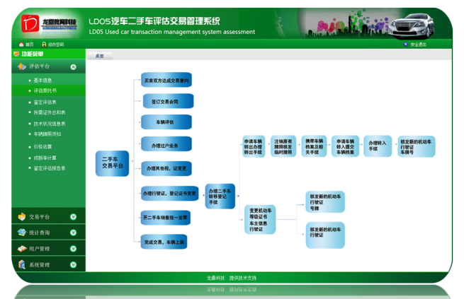

LD05二手车评估交易实训教学软件
LD05二手车评估交易实训教学软件是根据二手车交易市场的主要工作流程、中华人民共和国国家质量监督 检验检疫总局、中国国家标准化管理委员会2014年6月1日颁布实施的《二手车鉴定评估技术规范》等相关 标准模拟设计研发的实训教学软件，包含二手车鉴定评估和二手车交易两个主要模块，二手车鉴定评估主 要功能有客户登记信息、评估委托书、鉴定评估表、所需证件、技术状况、价格估算、鉴定评估报告，二 手车交易主要功能有交易意向单、车辆检验单、过户委托书、交易合同、行驶证变更单、登记证变更单、税务变更单、销售发票。
了解详情
